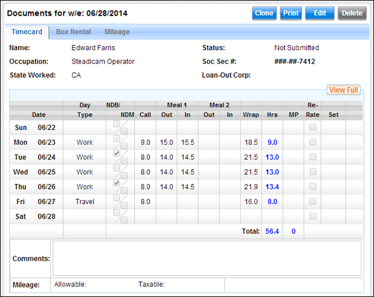
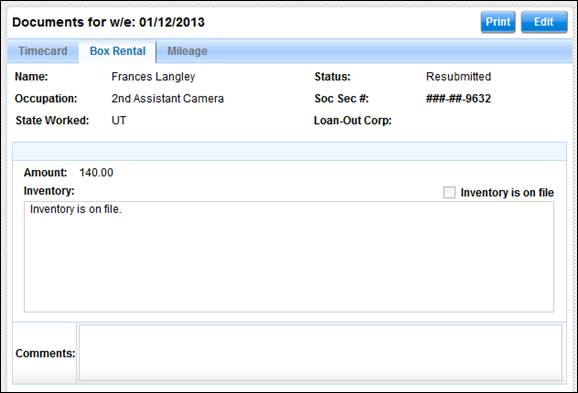

The basic timecard view contains three mini-tabs: Timecard, Box Rental, and Mileage.
The following fields are present in the timecard in the basic view:
Timecard Header:
·
Week
Ending: The week ending date for the timecard.
·
Name: The
name of the employee.
·
Occupation:
The employee's occupation.
·
State
Worked: The state in which the work was performed.
·
Status: The
status of the timecard (i.e. Submitted, Approved, etc.).
· Soc. Sec. #: The employee's Social Security number. This number is masked so that only a portion of the number is displayed.
·
Loan-Out
Corp.: The Loan-Out Corporation of the employee, if applicable.
Basic Timecard with Header

Submitted Hours Table:
The submitted hours table displays the hours worked for each of the seven days of the work week.
· Date: The weekday and date for each day of the week.
· Day Type: The day type identifier for the employee's work day. (i.e. Studio, Distant, Sick, Off, etc.).
· NDB/NDM: A check indicates that the day's Non-Deductible Breakfast and/or Meal was taken.
· Call: The employee's call time, or work start time.
· Meal 1 Out: The time the employee started the first meal.
· Meal 1 In: The time the employee completed the first meal.
· Meal 2 Out: The time the employee started the second meal.
· Meal 2 In: The time the employee completed the second meal.
· Wrap: The employee's wrap time for the day, or work end time.
· Hours: The number of hours the employee worked per day.
· MP: The number of meal penalty violations, if any, reported by the employee.
· Re-Rate: A check indicates that the employee is reporting that they worked an occupation different from their typical role, and therefore may need to receive a different rate for that work.
· Set: If applicable, the set number on which the employee worked
·
Comments:
Comments entered by the employee or approvers. These comments can be viewed by anyone who is
able to view the timecard.
·
Mileage:
The number of allowable or taxable miles reported.
·
Box
Rental: If a box rental form has been created, the box rental amount
displays to the right of the Mileage section.
The following fields are present in the box rental form in the basic view:
Basic Box Rental View

·
Amount:
The total amount for the weekly box or kit rental.
·
Inventory
is on file: Check this if the rental inventory is on file at the production
office.
·
Inventory:
List the inventory for the rental here.
· Comments: Enter any comments regarding the rental.
The following fields are present in the mileage form in the basic view:
Basic Mileage Form View
·
Date:
The date for the mileage entry.
·
Destination:
The destination driven to or from.
·
Odometer
Start/End: Optionally, input your car's odometer start and end mileage
amounts. The total miles will be
computed for you.
·
Taxable:
Check this field if the mileage is taxable.
· Comments: Enter any comments regarding the mileage form.
Related Topics